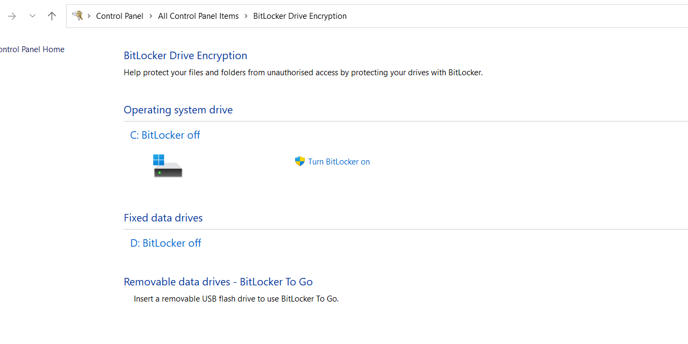
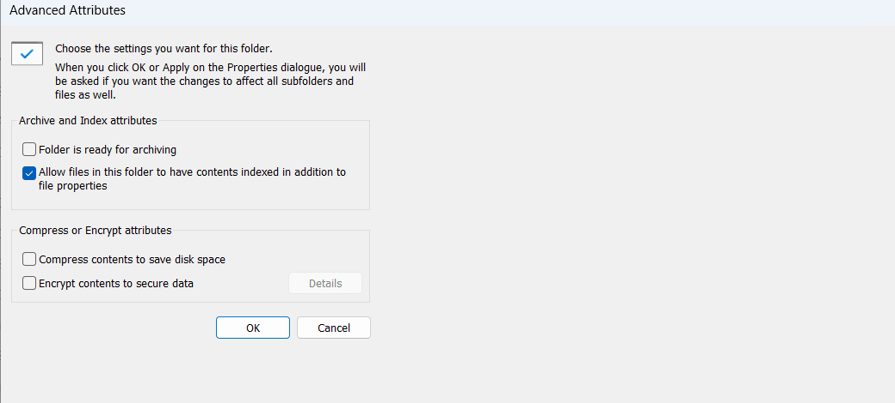

متى نعملها
نعملها لحماية البيانات المخزّنة إذا سُرق الجهاز أو فُقد.
تقنية 3 من 15
نعملها لحماية البيانات المخزّنة إذا سُرق الجهاز أو فُقد.
وظيفتها جعل الملفات أو المجلد أو القرص غير قابل للقراءة إلا بكلمة المرور أو مفتاح فك التشفير الصحيح.
لتشفير القرص كاملاً نشغّل برنامج بيت لوكر (BitLocker). للملفات أو مجلد محدد إما نضعهم على هذا القرص المشفّر، أو نختار تشفير المحتوى من خصائص المجلد في ويندوز (Windows).

